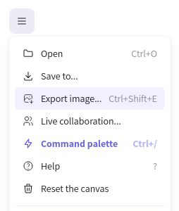
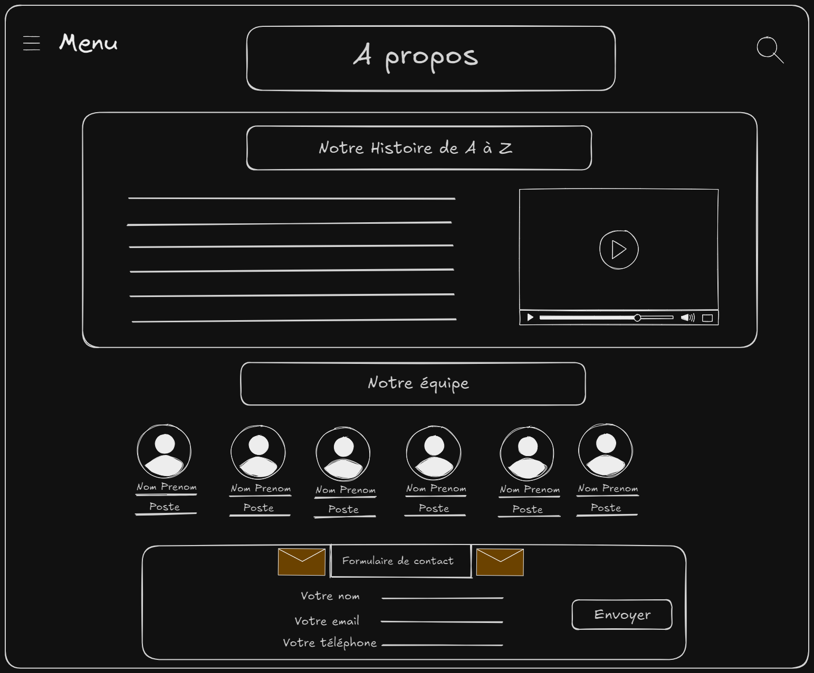
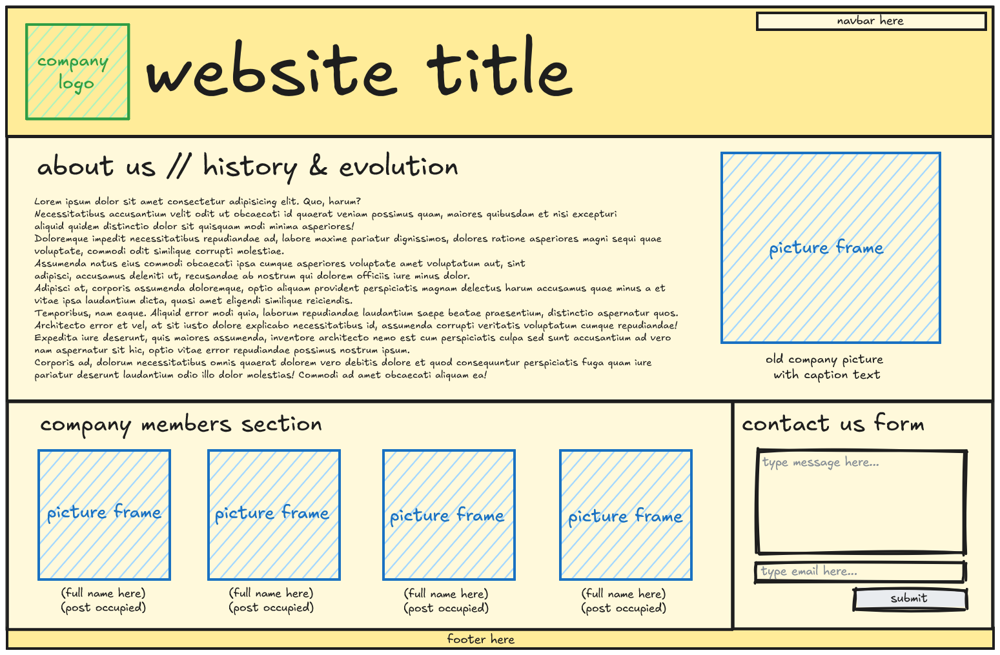
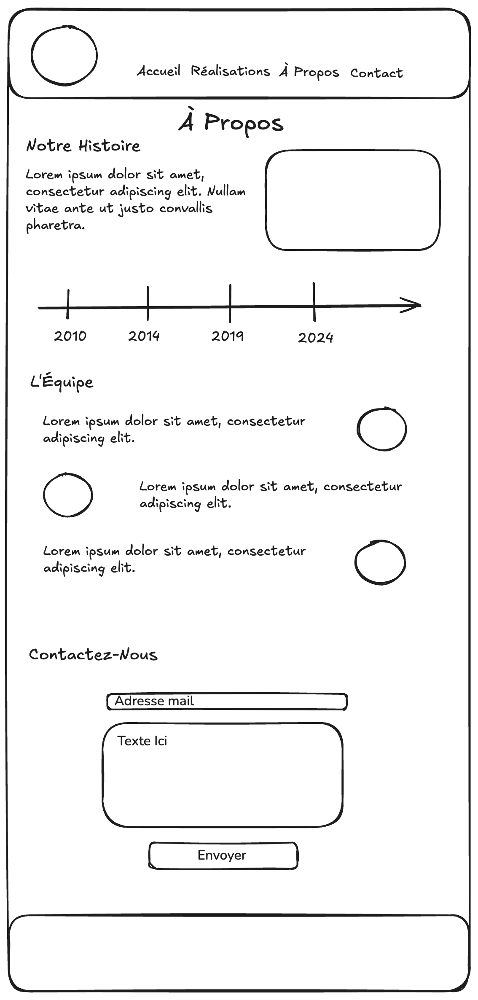

Maquetter des interfaces utilisateur web
Objectifs
- Connaître les différents types de maquettes
- Apprendre à composer une maquette d'interface web
Introduction
En tant que développeur web, tu devras peut-être créer toi-même les maquettes de tes applications.
Même si tu as la chance d'avoir une personne qui fait du design dans ton équipe, c'est important que tu aies une base dans le domaine pour communiquer efficacement. C'est ce que tu vas pouvoir valider dans cette quête.
Pourquoi les maquettes sont-elles importantes ? Imagine que tu construises une maison sans plan. Tu risques de faire face à de nombreux problèmes imprévus, de perdre du temps et de l'argent. De la même manière, une maquette te permet de planifier et d'anticiper les besoins et les défis avant de commencer le développement d'une application.
Sommaire
Le brief
Hello 👋,
Notre nouveau client souhaite mettre à jour son site vitrine en ajoutant une page "À propos". Elle sera dédiée à l'histoire de l'entreprise familiale, et présentera les membres de l'équipe. Tu peux réaliser un premier wireframe de cette page "À propos" pour lui envoyer une proposition rapidement.
La page doit obligatoirement inclure :
- Une section sur l'évolution et l'histoire de l'entreprise
- Une présentation de l'équipe avec nom, prénom, photo et intitulé du poste occupé pour chacun
- Un formulaire pour prendre contact avec l'entreprise
L'équipe design.
Le debrief
Comme toujours, garde ce message sous la main : tu y trouveras des informations précieuses sur ce que tu dois faire.
Regardons maintenant en quoi consiste cette mission et comment la mener à bien.
Qu'est-ce qu'une maquette ?
Une maquette ou prototype est un plan visuel de ton application. Comme pour la construction d'une maison, il est essentiel de faire un plan en amont pour valider ce que tu vas construire.
Tout au long de son développement un site web évolue. Tu devras maintenir à jour les maquettes lors du développement de nouvelles fonctionnalités. Le plan n'est pas définitif.
Ce plan peut être plus ou moins détaillé selon le temps que tu y consacres. La preuve en image :
Types de maquettes
Tu dois connaître les différents types de maquettes et le vocabulaire associé. Voici les principaux types que tu rencontreras :
- Wireframe : Maquette basse fidélité, souvent en noir et blanc, qui montre l'agencement général des éléments.
- Mockup : Maquette haute fidélité qui inclut des détails visuels tels que les couleurs et la typographie.
- Prototype : Maquette interactive qui permet de simuler l'expérience utilisateur finale.
Pour en savoir plus, consulte cette quête :
Choisir un outil
Que tu aies du talent pour le dessin ou pas, tu sais depuis longtemps comment utiliser un papier et un crayon : ce sera toujours un excellent choix parce que tu n'auras rien à apprendre, et que tu auras très souvent tout le matériel sous la main.
Pour des maquettes basiques, tu peux utiliser Excalidraw : c'est une version en ligne simple mais très puissante du papier et du crayon.
Un tableau blanc en ligne
Et pour apprendre à l'utiliser en quelques secondes :
Composer ton interface
Une fois ton outil choisi, tu as besoin de connaître les différents composants que tu peux intégrer dans une interface :
- En-têtes et titres : pour structurer l'information.
- Images et vidéos : pour illustrer et dynamiser le contenu.
- Formulaires : pour recueillir des informations des utilisateurs.
- Boutons et liens : pour naviguer entre les différentes pages.
Pour approfondir la composition de ton interface :
Challenge
Exporte ta maquette depuis Excalidraw, et poste l'image en solution du challenge.

Critères de validation
- [ ] La maquette est conforme au brief donné.
Plusieurs solutions possibles
Chacune de ces propositions a été réalisée par des élèves en formation. Elles sont conformes au brief donné : une section sur l'évolution et l'histoire de l'entreprise, une présentation de l'équipe et un formulaire de contact.
Stephen Bacher

Les différentes sections sont affichées en "pile" les unes en dessous des autres : c'est la manière la plus naturelle de faire. Des éléments clés déclencheront une réaction et un échange avec le client :
- la présence d'un menu et d'une option de recherche en haut à gauche et à droite du wireframe : que devrait contenir le menu ? À quoi peut amener une recherche sur le site ?
- la proposition d'une vidéo dans la section "Notre histoire" : est-ce que le client peut fournir des médias pour illustrer la page ? Est-ce que c'est une prestation à lui proposer ?
En cas de désapprobation du client, supprimer ces éléments conserve l'esprit et l'organisation du wireframe : ce sont des bonnes initiatives à proposer sans qu'elles prennent plus de place que la "vraie" proposition de design à faire valider par le client.
Merci à Stephen Bacher pour cette solution :)
Julie Coulon

Le format wireframe est utilisé de façon intéressante : la couleur serait presque en trop pour respecter le cahier des charges d'un wireframe, mais l'utilisation de nuances de jaune pour le fond guide la lecture du titre vers les autres sections. La distinction vert/bleu entre les images et le logo a aussi un impact positif sur la lecture.
Les textes sont suffisamment neutres pour limiter les biais sur les images des membres de l'équipe. À l'inverse, la légende de la photo "historique" amène un parti pris en suggérant l'utilisation d'une vieille photo. C'est là aussi à la limite du wireframe, mais apporte une proposition concrète, pertinente et assez neutre pour ne pas remettre en question la totalité du wireframe en cas de refus du client.
Merci à Julie Coulon pour cette solution :)
Mickaël Girardet

Une proposition de design mobile : si le développement est recommandé en mobile first, c'est une contrainte forte pour le design avec une "toile" plus réduite pour exprimer son art. L'empilement des sections devient vraiment la norme.
Des éléments très visuels comme la timeline permettent de montrer l'information avec moins de texte. Sur la section de l'équipe, l'alternance gauche / droite des photos permet de casser la monotonie du scroll vertical.
La discrète zone vide en pied du wireframe laisse la porte ouverte pour discuter d'une barre avec des boutons, facilement accessible par le pouce avec le téléphone dans la main.
Merci à Mickaël Girardet pour cette solution :)